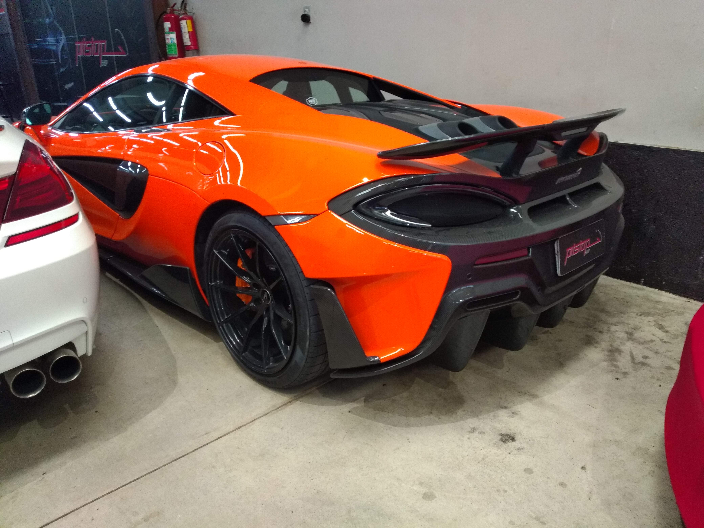
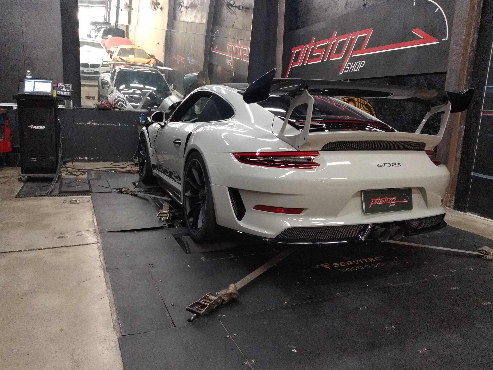
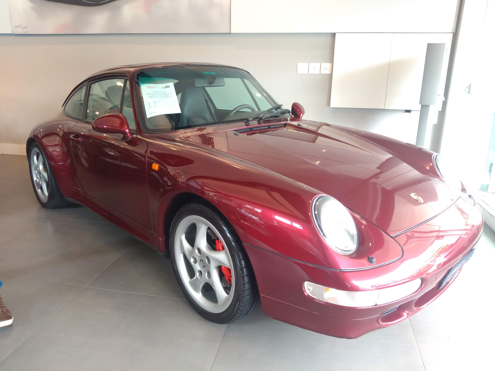
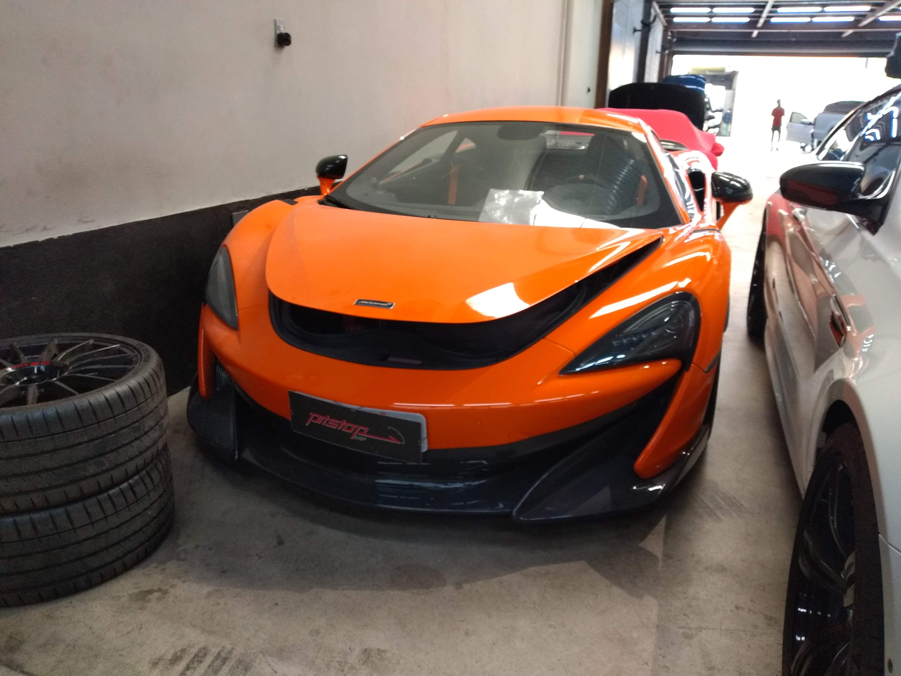
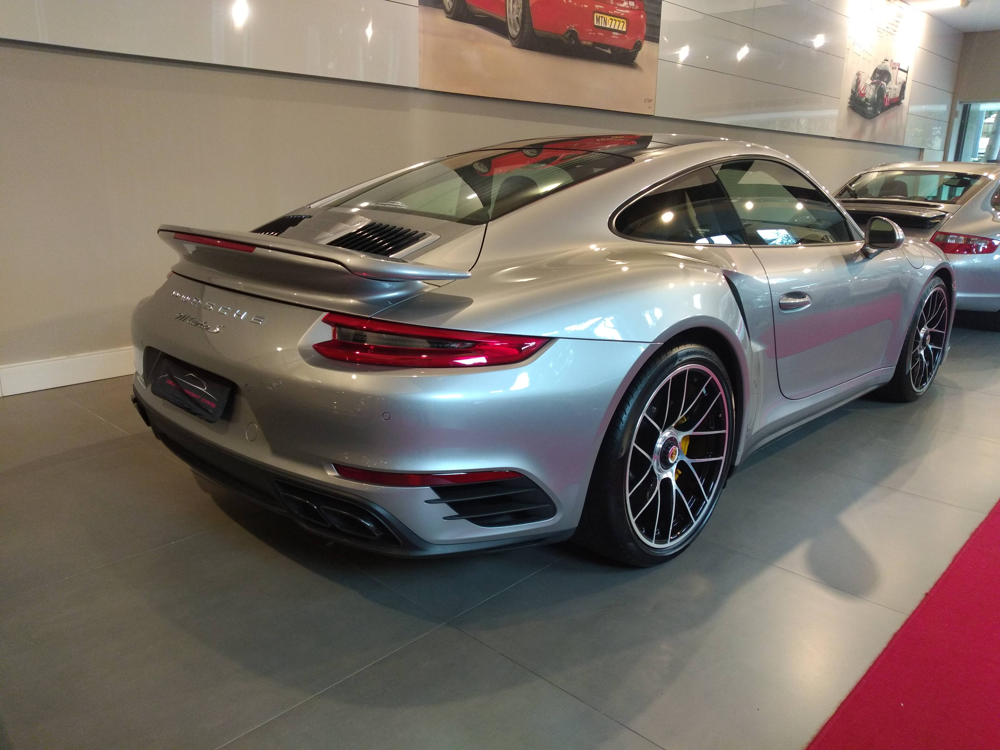
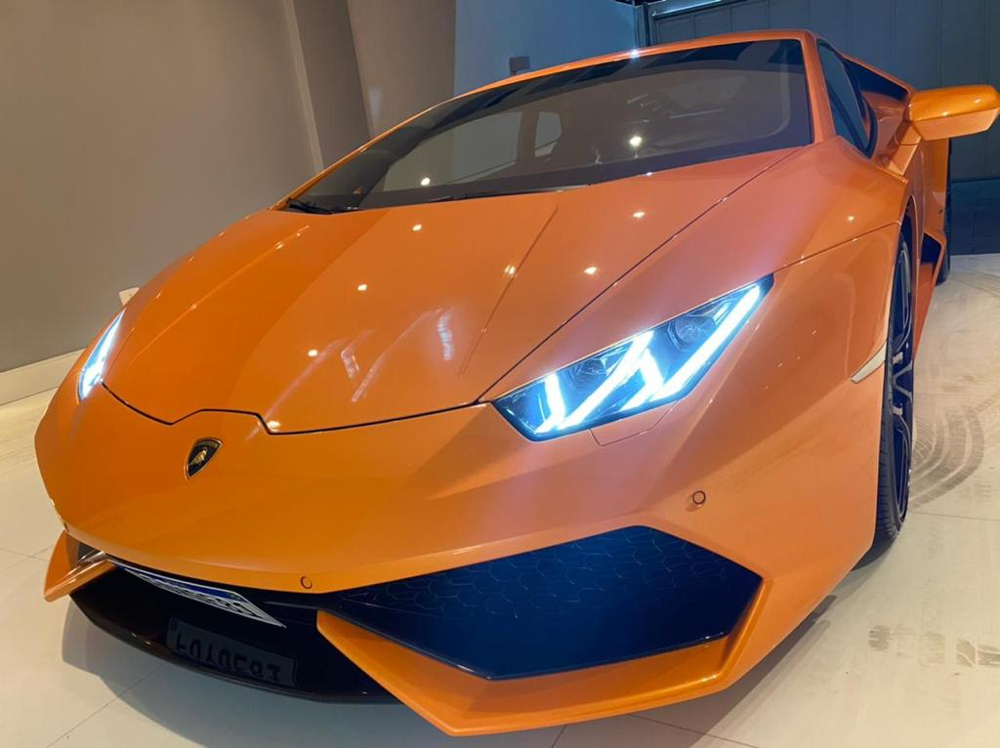
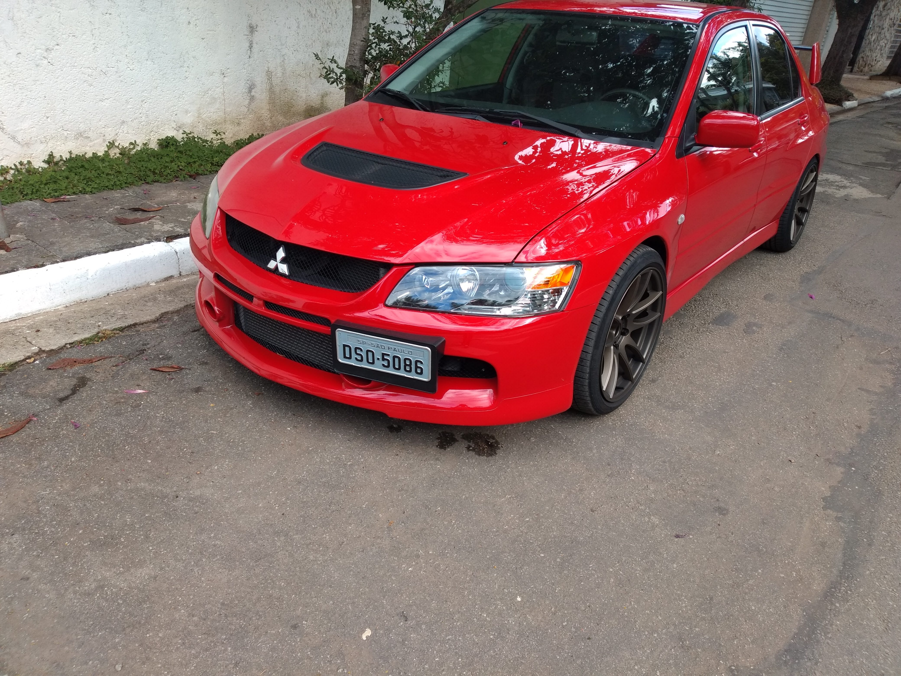

Registre manutenções, receba alertas e acompanhe o histórico completo da sua frota.
Começar agora

Sempre fui apaixonado por carros desde moleque, mas a coisa ficou séria mesmo em 2011. Foi quando vi uma Ferrari F430 Spider Giallo Modena parada na frente de uma loja da Fiat. Logo depois, o dono apareceu com uma 458, e aí não teve jeito: virou o carro da minha vida. De lá para cá, fui me envolvendo cada vez mais com esse mundo. No final de 2020, entrei com um parceiro na SPTC (São Paulo Top Cars) para fazer car spotting por SP. Foi nessa época que respirei a cena de verdade e caí de cabeça na "nerdolagem" automotiva. Quando a SPTC acabou, eu e meu amigo abrimos a FoundCars, o que levou nossa paixão para outro nível e nos deu um contato muito mais técnico com os carros.

Meu tempo na SPTC e na FoundCars foi o que realmente consolidou meu lado técnico — a vontade de entender os problemas crônicos, conhecer cada modelo a fundo e todas as suas variantes. Como a FoundCars funcionava como uma consultoria de compra, manutenção e preparação, nós tínhamos muito contato com a rotina das oficinas. Vivendo isso na prática, ficou claro qual era o maior gargalo dos proprietários: as manutenções periódicas. Controlar o básico, como troca de óleo, fluido de arrefecimento e de freio, acabava virando uma dor de cabeça frequente.
Por isso, quando surgiu a oportunidade desse projeto individual com tema livre, eu não pensei duas vezes: o foco teria que envolver carros. Na hora de definir o escopo, decidi criar o que seria mais útil na prática: um dashboard para ajudar o dono a ter o controle exato do histórico de tudo o que foi feito na mecânica e de quanto foi gasto no veículo.

Esta foto da McLaren foi tirada na época da SPTC, durante uma visita à PitStopShop, uma oficina especializada na manutenção e preparação de carros premium. O veículo estava lá para receber um pacote de preparação Stage 2. Este modelo, a 600LT, é considerado por muitos entusiastas como um dos melhores carros para se guiar em pista, graças ao seu excelente equilíbrio entre dinâmica e potência.
Esta foto do GT2 RS 991.2 também foi registrada na PitStopShop. No momento do clique, o carro estava no dinamômetro, onde o preparador da oficina testava o acerto recém-feito. O projeto deste carro foi dividido em duas calibrações: um mapa para a rua, focado em extrair o máximo de potência absoluta, e um mapa para pista, que otimizava a curva de torque e potência para garantir as melhores saídas de curva.
Este Porsche 911 Carrera 993 foi fotografado no showroom da Deutsch Sports Car, onde estava disponível para compra. A loja é uma grande referência no mercado e na venda de Porsches fora da rede de representantes oficiais da marca no Brasil.

Esta 911 Turbo S 991.2 também foi fotografada no showroom da Deutsch Sports Car. O Turbo S é considerado o modelo flagship (topo de linha) da marca alemã para uso nas ruas; acima dele no portfólio, encontram-se apenas os modelos voltados para as pistas, como o GT3 e o GT2, ou edições especiais, como o Sport Classic.

Esta Lamborghini Huracán fez parte do nosso portfólio na FoundCars e estava anunciada para venda em nosso site. Chegamos muito perto de fechar o negócio, mas, por questões familiares inesperadas, o cliente precisou recuar e dar prioridade a outras frentes naquele momento.

Este Evo IX foi fotografado na rua de trás do famoso Posto do Varanda, localizado na Ponte Cidade Jardim — um local que é um ponto de encontro clássico para os entusiastas automotivos de São Paulo.
Programe manutenções por quilometragem ou data.
Todos os serviços e custos registrados por veículo.
Gerencie toda a sua frota em uma conta.